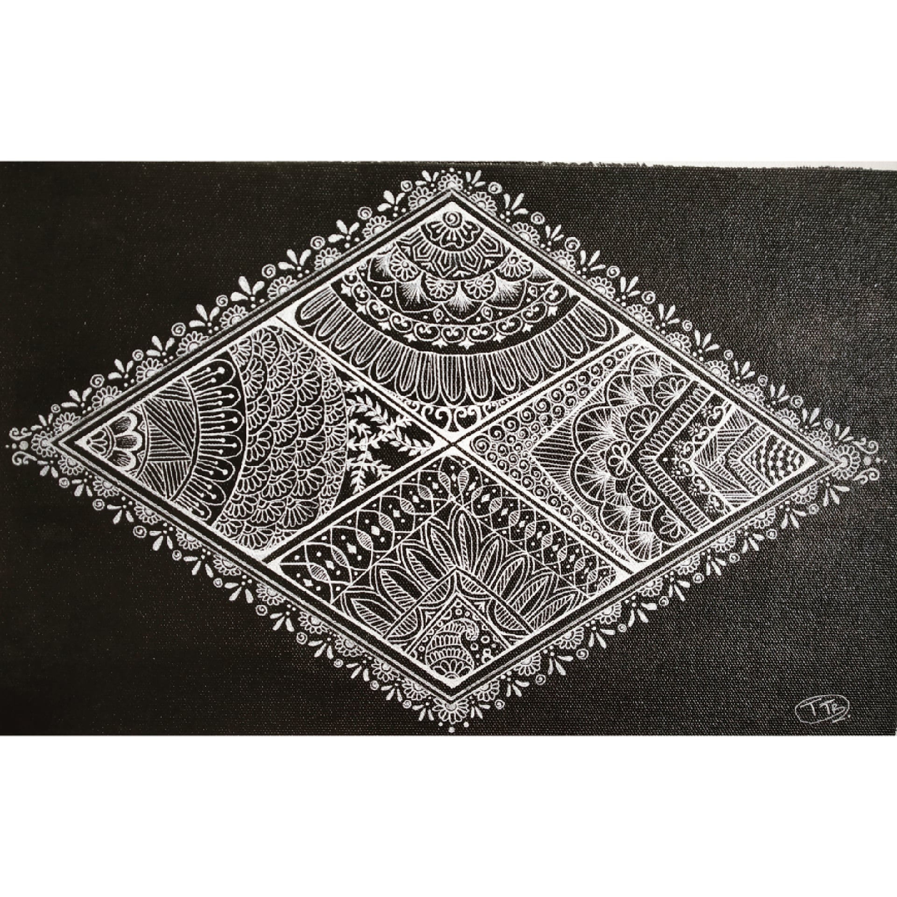

DIAMOND ART
In frame is mandala art on a black canvas .
The design here is made in a diamond shape to give a different effect to the painting .
The main motive of doing the art in a different shape rather than a circle to give it a little unique look.
one can simply make this design on a canvas or might also use this design on different things.
Materials Required :
1 Canvas (16*16) inch, paint brush.
black and white acrylic colour’s or chalk black paint.
white ink.
steps one can follow(if needed) :
Fist of all take a plain canvas and tape it from all sides using any tape so that
the margins dont get the colour or if you want the entire canvas black you can directly start painting.
Take a wide paint brush and paint it all
black and leave that it it dries well.
After the canvas has dried up, draw the outline of diamond shape and
divide that shape into 4 mini diamonds using scale and pencil.
Then you can start making any patterns or designs you would like to make inside
those mini diamonds shapes and after all the shapes are filled, it will be done.